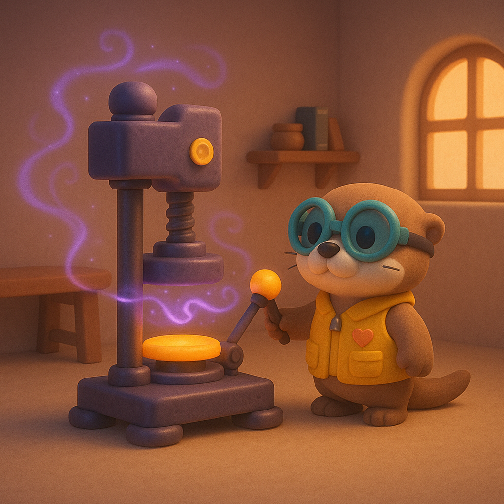

Pip's Projects
One tiny otter. One mystical press. A brand-new experiment every single day.
Pip's Projects is an original animated short-video series. Every day, Pip the Otter — a curious little inventor in teal goggles — runs one whimsical experiment in his magical workshop, and the whole world gets to watch what happens in just 8 seconds.
Where to watch
A new episode premieres every single day on our official channels:
What is Pip's Projects?
Each episode is a bite-sized, family-friendly "satisfying experiment" video: Pip places an everyday object — a rainbow popsicle, a soccer ball, a stack of macarons — into one of his magical machines, pulls the lever, and something delightful happens. Squishes, sparkles, surprises. No dialogue, no drama: just pure, cozy, claymation-style joy with Pip's signature "Pip-pip!" squeak.
Episodes often celebrate what's happening in the world right now — holidays, seasons, big sporting moments, and whatever's trending — so there's always a reason to check today's experiment.
The star of the show
Pip is a small, chubby river otter with warm brown fur, round teal goggles, and a mustard-yellow utility vest with a little red heart. He doesn't talk — he squeaks, chirps, trills, and giggles his way through every experiment. His pride and joy is The Mystical Press, a plum-purple hydraulic press with a glowing golden star that hums, hisses, and swirls with purple magic.
Never miss an experiment
Browse the episode log to see every experiment Pip has run so far — updated daily, automatically, the moment a new episode is produced.